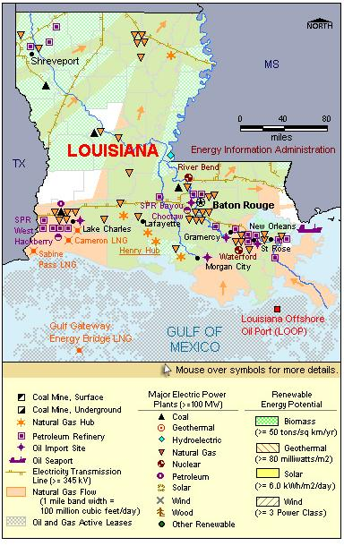

State Overview
There are two operating nuclear power plants in Louisiana:
River Bend in West Feliciana Parish
- On September 25, 2008, Entergy Operations, Inc. filed an application with the Nuclear Regulatory Commission to build and operate an Economic Simplified Boiling Water Reactor (ESBWR) at River Bend.
- In February 2009, Entergy announced that it was not able to come to mutually acceptable terms with GE Hitachi on the ESBWR. As of May 31, 2009, the application review is on hold, suspended until further notice.
Waterford in St. Charles Parish
- On August 28, 2005, Waterford was in the path of Hurricane Katrina and was shut down as a precaution. The plant escaped significant damage, and NRC authorized the reactor to re-start on September 8, 2005.
Contribution of Nuclear Power
With a little over 2,000 MW of nuclear capacity, Louisiana ranks roughly in the middle of States with nuclear power.
Nuclear capacity is about 8% of Louisiana’s total electric generating capacity, third behind natural gas and coal.
Nuclear generation accounts for nearly 20% of the State’s total generation.
Louisiana was a net importer of electric power energy, importing 15% of its electric energy use.
License Renewals
- River Bend: On September 30, 2008, Entergy notified the NRC that it planned to prepare a license renewal application for River Bend. The original license runs until August 2025.
- Waterford: On September 30, 2008, Entergy notified the NRC that it planned to prepare a license renewal application for Waterford. The original Waterford license will expire in December 2024.
New Applications
- River Bend: Entergy announced in September 2005 that it would seek a Combined License (COL) for a new reactor at River Bend. On September 25, 2008, it submitted an application for an Economic Simplified Boiling Water Reactor (ESBWR).

|
| Louisiana Total Electric Power Industry, Summer Capacity and Net Generation, by Energy Source, 2008 |
| Primary Energy Source |
Summer Capacity
(MW) |
Share of State Total
(Percent) |
Net Generation
(Thousand MWh) |
Share of State Total
(Percent) |
| Nuclear |
2,154 |
8.2 |
15,371 |
16.6 |
| Coal |
3,482 |
13.3 |
24,100 |
26.1 |
| Hydro and Pumped Storage |
192 |
0.7 |
1,064 |
1.2 |
| Natural Gas |
19,345 |
73.9 |
45,344 |
49.0 |
| Other1 |
270 |
1.0 |
1,559 |
1.7 |
| Other Renewable1 |
394 |
1.5 |
2,710 |
2.9 |
| Petroleum |
346 |
1.3 |
2,305 |
2.5 |
| Total |
26,183 |
100.0 |
92,453 |
100.0 |
| Louisiana Nuclear Power Plants, Summer Capacity and Net Generation, 2008 |
| Plant Name/Total Reactors |
Summer Capacity
(MW) |
Net Generation
(Thousand MWh) |
Share of State Nuclear
Net Generation
(Percent) |
Owner |
River Bend
Unit 1 |
978 |
6,334 |
41.2 |
Entergy Gulf States Louisiana LLC |
Waterford 3
Unit 3 |
1,176 |
9,037 |
58.8 |
Entergy Louisiana Inc |
2 Plants
2 Reactors |
2,154 |
15,371 |
100.0 |
|
Plant Profiles
River Bend Station
| River Bend |
| Unit |
Summer Capacity
(MW) |
Net Generation
(Thousand MWh) |
Summer Capacity Factor
(Percent) |
Type |
Commercial Operation Date |
License Expiration Date |
| 1 |
978 |
6,334 |
73.9 |
BWR |
6/16/1986 |
8/29/2025 |
| |
978 |
6,334 |
73.9 |
|
|
|
Operator: Entergy Gulf States
Location and Service Territory: The River Bend Station is on a 3,300-acre site in West Feliciana near the State Capitol at Baton Rouge.
Construction Cost: $7.198 billion (2007 USD)
Staffing: The plant has approximately 560 full-time employees.
Reactor Description: The nuclear generating unit is a General Electric Type 6 boiling water reactor.
Cooling System: Cooling water is supplied by the Mississippi River for its mechanical draft cooling towers.
Waterford Steam Electric Station
| Waterford 3 |
| Unit |
Summer Capacity
(MW) |
Net Generation
(Thousand MWh) |
Summer Capacity Factor
(Percent) |
Type |
Commercial Operation Date |
License Expiration Date |
| 3 |
1,176 |
9,037 |
87.7 |
PWR |
9/24/1985 |
12/18/2024 |
| |
1,176 |
9,037 |
87.7 |
|
|
|
Operator: Entergy Louisiana
Location and Service Territory: The Waterford plant is on a 3,000-acre site near Taft, Louisiana, in St. Charles Parish. This is the closest nuclear plant to New Orleans.
Construction Cost: $5.476 billion (2007 USD)
Reactor Description: The two-loop, pressurized water reactor at Waterford was built by Combustion Engineering.
Cooling System: Waterford relies on mechanical draft cooling towers that draw water from the Mississippi River.
see also:
more annual nuclear statistics
projected electricity capacity to 2035
international
electricity statistics
|
|